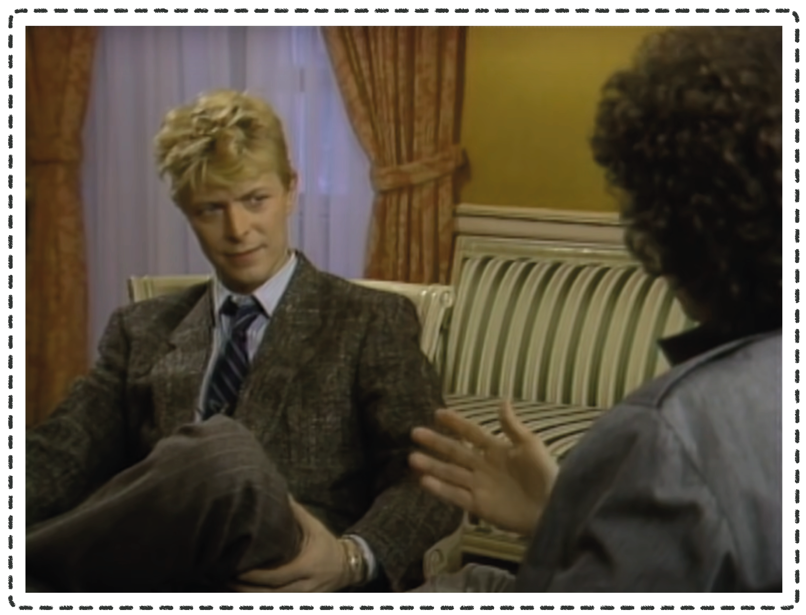
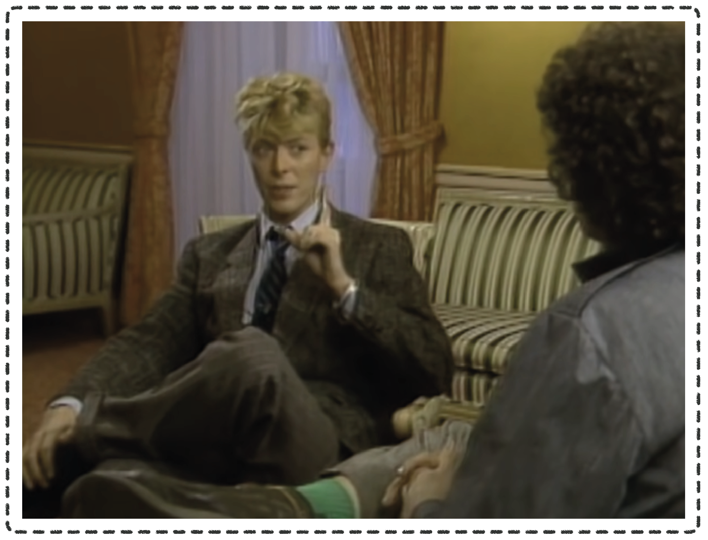

░░▒▒ ░░
░░░░░░░░░░░░░░░░░░░░░░░░░░░░░░░░░░░░░░░░░░░░░░░░░░░░░░░░░░░░░░ ░░▒▒ ░░
░░░░░░░░░░░░░░░░░░░░░░░░░░░░░░░░░░░░░░░░░░░░░░░░░░░░░░░░░░░░ ▒▒░░ ░░░░
░░░░░░░░░░░░░░░░░░░░░░░░░░░░░░░░░░░░░░░░░░░░░░░░░░░░ ░░ ▒▒ ░░░░
░░░░░░░░░░░░░░░░░░░░░░░░░░░░░░░░░░░░░░░░░░░░░░░░░░░░ ░░ ▒▒░░ ░░░░
░░░░░░░░░░░░░░░░░░░░░░░░░░░░░░░░░░░░░░░░░░░░░░░░░░░░ ░░ ▒▒░░ ░░▒▒
░░░░░░░░░░░░░░░░░░░░░░░░░░░░░░░░░░░░░░░░░░░░░░░░░░░░ ▒▒░░ ░░
░░░░░░░░░░░░░░░░░░░░░░░░░░░░░░░░░░░░░░░░░░░░░░░░░░░░ ▓▓ ▒▒
░░░░░░░░░░░░░░░░░░░░░░░░░░░░░░░░░░░░░░░░░░░░░░░░░░░░ ▓▓░░ ░░░░
░░░░░░░░░░░░░░░░░░░░░░░░░░░░░░░░░░░░░░░░░░░░░░░░ ░░▒▒ ░░
░░░░░░░░░░░░░░░░░░░░░░░░░░░░░░░░░░░░░░░░░░░░░░░░ ▒▒░░ ░░▒▒
░░░░░░░░░░░░░░░░░░░░░░░░░░░░░░░░░░░░░░░░░░░░░░░░ ▒▒░░ ░░▒▒
░░░░░░░░░░░░░░░░░░░░░░░░░░░░░░░░░░░░░░░░░░░░░░░░ ▒▒ ▒▒
░░░░░░░░░░░░░░░░░░░░░░░░░░░░░░░░░░░░░░░░░░░░░░ ▒▒ ░░░░
░░░░░░░░░░░░░░░░░░░░░░░░░░░░░░░░░░░░░░░░░░░░░░ ▒▒░░ ░░░░
░░░░░░░░░░░░░░░░░░░░░░░░░░░░░░░░░░░░░░░░░░ ▒▒░░ ░░░░
░░░░░░░░░░░░░░░░░░░░░░░░░░░░░░░░░░░░░░░░░░▒▒░░░░░░░░░░░░░░░░░░░░░░░░░░░░░░░░░░░░░░░░░░░░░░░░░░░░░░░░░░░░░░░░░░░░░░░░░░░░░░░░░░░░░░░░░░░░░░░░░░▒▒▒▒▒▒▒▒░░▒▒
░░░░░░░░░░░░░░░░░░░░░░░░░░░░░░░░░░░░░░░░▓▓░░░░░░░░░░░░░░░░░░░░░░░░░░░░░░░░░░░░░░░░░░░░░░░░░░░░░░░░░░░░░░░░░░░░░░░░░░░░░░░░░░░░░░░░░░░░░░░░░░░░░░░░░░░░░░░░░░
░░░░░░░░░░░░░░░░░░░░░░░░░░░░░░░░░░░░░░░░▓▓▒▒▒▒░░░░░░░░░░░░░░░░░░░░░░░░░░░░░░░░░░░░░░░░░░░░░░░░░░░░░░░░░░░░░░░░░░░░░░░░░░░░░░░░░░░░▒▒▓▓▓▓▓▓▓▓▓▓▓▓▓▓▓▓▓▓▓▓░░░░
░░░░░░░░░░░░░░░░░░░░░░░░░░░░░░░░░░░░░░░░▓▓▒▒▓▓██████████████████████████████▓▓▓▓▓▓▓▓▓▓▓▓▓▓▓▓▓▓▓▓▓▓▓▓▓▓▓▓████▓▓██▓▓▓▓▓▓▓▓▓▓▓▓▓▓▒▒░░▓▓░░░░ ░░ ░░░░░░▒▒▓▓░░
░░░░░░░░░░░░░░░░░░░░░░░░░░░░░░░░░░░░░░ ▓▓▒▒██▓▓▓▓▓▓▓▓▓▓▓▓▓▓████████▓▓████▒▒▒▒▒▒▒▒▒▒▒▒▒▒▒▒▒▒▒▒▒▒▒▒▒▒▓▓▓▓▓▓▓▓██▓▓▓▓▓▓▓▓▓▓▓▓▓▓▓▓██░░░░ ▒▒▓▓▓▓▓▓▓▓░░░░░░▓▓░░
░░░░░░░░░░░░░░░░░░░░░░░░░░░░░░░░░░░░░░░░▓▓▒▒▓▓▓▓██████▓▓▒▒▒▒▓▓▓▓▓▓▓▓▒▒▒▒▒▒▒▒▓▓▓▓████████████████████████████▓▓▓▓▓▓▓▓▓▓▓▓▓▓▓▓████░░▓▓ ▓▓▒▒░░▒▒▓▓▓▓▓▓░░░░▓▓░░
░░░░░░░░░░░░░░░░░░░░░░░░░░░░░░░░░░░░░░░░▓▓▒▒▓▓▒▒▒▒▒▒██████████▓▓▓▓▓▓▓▓▒▒▒▒▒▒▒▒▒▒▒▒▒▒▒▒▒▒▒▒▒▒▒▒▒▒▒▒▒▒▒▒▒▒▒▒▓▓▓▓▓▓████████▓▓▒▒▒▒▓▓░░▓▓░░▓▓▒▒▓▓▓▓▓▓▓▓▓▓▓▓░░▓▓░░
░░░░░░░░░░░░░░░░░░░░░░░░░░░░░░░░░░░░░░ ▓▓▒▒▒▒░░▒▒██▓▓▓▓▓▓▓▓▒▒▒▒▒▒▒▒▒▒▒▒▒▒▒▒▒▒▒▒▒▒▒▒▒▒▒▒▒▒▒▒▒▒▒▒▒▒▒▒▒▒▒▒▒▒▒▒▒▒▒▒▒▒▓▓▓▓▓▓██▓▓░░▒▒▒▒░░▓▓▓▓▓▓██▓▓▓▓▓▓▓▓▒▒░░▓▓░░
░░░░░░░░░░░░░░░░░░░░░░░░░░░░░░░░░░░░░░ ▓▓▒▒▒▒░░██▓▓▓▓▒▒▒▒▒▒▒▒▒▒▒▒▒▒▒▒▒▒▒▒▒▒▒▒▒▒▒▒▒▒▒▒▒▒▒▒▒▒▒▒▒▒▒▒▒▒▒▒▒▒▒▒▒▒▒▒▒▒▒▒▒▒▒▒▓▓▓▓██░░▒▒░░░░▓▓▓▓▓▓▓▓▓▓▒▒▓▓▓▓▒▒▒▒▓▓░░
░░░░░░░░░░░░░░░░░░░░░░░░░░░░░░░░░░░░░░ ▓▓▒▒▒▒░░██▒▒▒▒▒▒▒▒▒▒▒▒▒▒▒▒▒▒▒▒▒▒▒▒▒▒▒▒▒▒▒▒▒▒▒▒▒▒▒▒▒▒▒▒▒▒▒▒▒▒▒▒▒▒▒▒▒▒▒▒▒▒▒▒▒▒▒▒▒▒▒▒▒▒░░▒▒▒▒▒▒▓▓██▓▓▓▓▓▓██▓▓▓▓▒▒░░▓▓░░
░░░░░░░░░░░░░░░░░░░░░░░░░░░░░░░░░░░░░░ ▓▓▒▒▒▒░░▓▓▒▒▒▒▒▒▒▒▒▒▒▒▒▒▒▒▒▒▒▒▒▒▒▒▒▒▒▒▒▒▒▒▒▒▒▒▒▒▒▒▒▒▒▒▒▒▒▒▒▒▒▒▒▒▒▒▒▒▒▒▒▒▒▒▒▒▒▒▒▒▒▒▒▒░░▒▒▒▒▒▒░░▓▓██▓▓▓▓▓▓██▓▓▒▒░░▓▓░░
░░░░░░░░░░░░░░░░░░░░░░░░░░░░░░░░░░░░░░ ▓▓▒▒▒▒░░▓▓▒▒▒▒▒▒▒▒▒▒▒▒▒▒▒▒▒▒▒▒▒▒▒▒▒▒▒▒▒▒▒▒▒▒▒▒▒▒▒▒▒▒▒▒▒▒▒▒▒▒▒▒▒▒▒▒▒▒▒▒▒▒▒▒▒▒▒▒▒▒▒▒▒▒▒▒▒▒▒▒▒▒░░▒▒██▓▓████▓▓▓▓░░░░▓▓▒▒
░░░░░░░░░░░░░░░░░░░░░░░░░░░░░░░░░░░░░░ ▒▒▒▒▒▒░░▒▒▒▒▒▒▒▒▒▒▒▒▒▒▒▒▒▒▒▒▒▒▒▒▒▒▒▒▒▒▒▒▒▒▒▒▒▒▒▒▒▒▒▒▒▒▒▒▒▒▒▒▒▒▒▒▒▒▒▒▒▒▒▒▒▒▒▒▒▒▒▒▒▒▒▒▒▒▒▒▒▒░░░░░░▒▒▓▓▓▓▓▓▓▓▒▒▒▒░░▓▓▒▒
░░░░░░░░░░░░░░░░░░░░░░░░░░░░░░░░░░░░░░ ▓▓▒▒▒▒▒▒▒▒▒▒▒▒▒▒▒▒▒▒▒▒▒▒▒▒▒▒▒▒▒▒▒▒▒▒▒▒▒▒▒▒▒▒▒▒▒▒▒▒▒▒▒▒▒▒▒▒▒▒▒▒▒▒▒▒▒▒▒▒▒▒▒▒▒▒▒▒▒▒▒▒▒▒▒▒▒▒▒▒▒▒░░░░░░░░▒▒▒▒▒▒▒▒░░░░▓▓▒▒
░░░░░░░░░░░░░░░░░░░░░░░░░░░░░░░░░░░░░░░░▓▓▒▒▓▓▒▒▒▒▒▒▒▒▒▒▒▒▒▒▒▒▒▒▒▒▒▒▒▒▒▒▒▒▒▒▒▒▒▒▒▒▒▒▒▒▒▒▒▒▒▒▒▒▒▒▒▒▒▒▒▒▒▒▒▒▒▒▒▒▒▒▒▒▒▒▒▒▒▒▒▒▒▒▓▓▒▒▒▒▒▒░░░░░░░░░░░░░░▒▒▒▒░░▓▓▒▒
░░░░░░░░░░░░░░░░░░░░░░░░░░░░░░░░░░░░░░ ▓▓▒▒▓▓▒▒▒▒▒▒▒▒▒▒▒▒▒▒▒▒▒▒▒▒▒▒▒▒▒▒▒▒▒▒▒▒▒▒▒▒▒▒▒▒▒▒▒▒▒▒▒▒▒▒▒▒▒▒▒▒▒▒▒▒▒▒▒▒▒▒▒▒▒▒▒▒▒▒▒▒▒▒▓▓▒▒▒▒▒▒░░░░░░▓▓▓▓▓▓▒▒░░▒▒░░▓▓▒▒
░░░░░░░░░░░░░░░░░░░░░░░░░░░░░░░░░░░░░░░░▓▓▒▒▓▓▓▓▒▒▒▒▒▒▒▒▒▒▒▒▒▒▒▒▒▒▒▒▒▒▒▒▒▒▒▒▒▒▒▒▒▒▒▒▒▒▒▒▒▒▒▒▒▒▒▒▒▒▒▒▒▒▒▒▒▒▒▒▒▒▒▒▒▒▒▒▒▒▒▒▒▒▒▒▓▓▒▒▒▒▒▒░░▒▒██▒▒▒▒▓▓▓▓▓▓▒▒░░▓▓▒▒
░░░░░░░░░░░░░░░░░░░░░░░░░░░░░░░░░░░░░░ ▒▒▒▒▓▓▓▓▒▒▒▒▒▒▒▒▒▒▒▒▒▒▒▒▒▒▒▒▒▒▒▒▒▒▒▒▒▒▒▒▒▒▒▒▒▒▒▒▒▒▒▒▒▒▒▒▒▒▒▒▒▒▒▒▒▒▒▒▒▒▒▒▒▒▒▒▒▒▒▒▒▒▒▒▓▓▒▒▒▒▒▒░░██▒▒▓▓▓▓▓▓▓▓▓▓▓▓▒▒▓▓▒▒
░░░░░░░░░░░░░░░░░░░░░░░░░░░░░░░░░░░░░░ ▒▒▒▒▓▓▓▓▒▒▒▒▒▒▒▒▒▒▒▒▒▒▒▒▒▒▒▒▒▒▒▒▒▒▒▒▒▒▒▒▒▒▒▒▒▒▒▒▒▒▒▒▒▒▒▒▒▒▒▒▒▒▒▒▒▒▒▒▒▒▒▒▒▒▒▒▒▒▒▒▒▒▒▒▓▓▒▒▒▒▒▒▓▓▓▓██▓▓██▒▒▒▒▓▓▓▓░░▓▓▒▒
░░░░░░░░░░░░░░░░░░░░░░░░░░░░░░░░░░░░░░░░▓▓▒▒▓▓▓▓▒▒▒▒▒▒▒▒▒▒▒▒▒▒▒▒▒▒▒▒▒▒▒▒▒▒▒▒▒▒▒▒▒▒▒▒▒▒▒▒▒▒▒▒▒▒▒▒▒▒▒▒▒▒▒▒▒▒▒▒▒▒▒▒▒▒▒▒▒▒▒▒▒▒▒▒▓▓▒▒▒▒▒▒██▓▓▓▓▒▒▓▓▒▒▒▒▓▓▓▓░░▓▓▒▒
░░░░░░░░░░░░░░░░░░░░░░░░░░░░░░░░░░░░░░░░▓▓▒▒▓▓██▒▒▒▒▒▒▒▒▒▒▒▒▒▒▒▒▒▒▒▒▒▒▒▒▒▒▒▒▒▒▒▒▒▒▒▒▒▒▒▒▒▒▒▒▒▒▒▒▒▒▒▒▒▒▒▒▒▒▒▒▒▒▒▒▒▒▒▒▒▒▒▒▓▓▒▒▓▓▒▒▒▒▒▒▓▓▓▓▓▓▒▒▓▓██▒▒▓▓▒▒░░▓▓▒▒
░░░░░░░░░░░░░░░░░░░░░░░░░░░░░░░░░░░░░░ ▓▓▒▒▓▓██▒▒▓▓▒▒▒▒▒▒▒▒▒▒▒▒▒▒▒▒▒▒▒▒▒▒▒▒▒▒▒▒▒▒▒▒▒▒▒▒▒▒▒▒▒▒▒▒▒▒▒▒▒▒▒▒▒▒▒▒▒▒▒▒▒▒▒▒▒▒▒▒▓▓▓▓▓▓▓▓▒▒▒▒▒▒▓▓██▓▓▒▒▓▓▓▓▓▓▓▓▒▒▓▓▒▒
░░░░░░░░░░░░░░░░░░░░░░░░░░░░░░░░░░░░░░░░▓▓▒▒▓▓▓▓▒▒▓▓▓▓▒▒▒▒▒▒▒▒▒▒▒▒▒▒▒▒▒▒▒▒▒▒▒▒▒▒▒▒▒▒▒▒▒▒▒▒▒▒▒▒▒▒▒▒▒▒▒▒▒▒▒▒▒▒▒▒▒▒▒▒▒▒▒▒▓▓▓▓▓▓▓▓▒▒▒▒▒▒░░▓▓██▓▓████▓▓▓▓░░▒▒▓▓▒▒
░░░░░░░░░░░░░░░░░░░░░░░░░░░░░░░░░░░░░░░░▓▓▒▒▓▓▓▓▓▓▓▓▓▓▓▓▒▒▒▒▒▒▒▒▒▒▒▒▒▒▒▒▒▒▒▒▒▒▒▒▒▒▒▒▒▒▒▒▒▒▒▒▒▒▒▒▒▒▒▒▒▒▒▒▒▒▒▒▒▒▒▒▒▒▒▒▓▓▓▓▓▓▓▓▓▓▒▒▒▒▒▒░░░░▓▓████████▒▒▒▒░░▓▓▒▒
░░░░░░░░░░░░░░░░░░░░░░░░░░░░░░░░░░░░░░░░▓▓▒▒▓▓▓▓▓▓▓▓▓▓▓▓▓▓▓▓▒▒▒▒▒▒▒▒▒▒▒▒▒▒▒▒▒▒▒▒▒▒▒▒▒▒▒▒▒▒▒▒▒▒▒▒▒▒▒▒▒▒▒▒▒▒▒▒▒▒▒▒▓▓▓▓▓▓▓▓▓▓▓▓▓▓▒▒▒▒▒▒░░░░░░░░▒▒▒▒▒▒▒▒▒▒░░▓▓▒▒
░░░░░░░░░░░░░░░░░░░░░░░░░░░░░░░░░░░░░░ ▓▓▒▒▓▓▓▓▓▓▓▓▓▓▓▓▓▓▓▓▓▓▓▓▓▓▒▒▒▒▒▒▒▒▒▒▒▒▒▒▒▒▒▒▒▒▒▒▒▒▒▒▒▒▒▒▒▒▒▒▒▒▒▒▓▓▓▓▓▓▓▓▓▓▓▓▓▓▓▓▓▓▓▓▓▓▓▓▒▒▓▓▓▓▓▓▓▓▓▓▓▓▓▓▓▓▓▓▓▓▓▓▓▓▓▓
░░░░░░░░░░░░░░░░░░░░░░░░░░░░░░░░░░░░░░░░▓▓▒▒▓▓▓▓▓▓▓▓▓▓▓▓▓▓▓▓▓▓▓▓▓▓▓▓▓▓▒▒▒▒▒▒▒▒▒▒▒▒▒▒▒▒▒▒▒▒▒▒▒▒▒▒▒▒▓▓▓▓▓▓▓▓▓▓▓▓▓▓▓▓▓▓▓▓▓▓▓▓▓▓▓▓▓▓▒▒██▓▓▓▓▓▓██████▓▓▓▓▓▓▓▓▓▓▒▒
░░░░░░░░░░░░░░░░░░░░░░░░░░░░░░░░░░░░░░░░▓▓▒▒▓▓▒▒▓▓▓▓▓▓▓▓▓▓▓▓▓▓▓▓▓▓▓▓▓▓▓▓▓▓▓▓▓▓▓▓▓▓▓▓▓▓▓▓▓▓▓▓▓▓▓▓▓▓▓▓▓▓▓▓▓▓▓▓▓▓▓▓▓▓▓▓▓▓▓▓▓▓▓▓▓▓▓▓▒▒████████▓▓▓▓▓▓██████▓▓▓▓▒▒
░░░░░░░░░░░░░░░░░░░░░░░░░░░░░░░░░░░░░░░░▓▓▒▒▓▓▓▓▓▓▓▓▓▓▓▓▓▓▓▓▓▓▓▓▓▓▓▓▓▓▓▓▓▓▓▓▓▓▓▓▓▓▓▓▓▓▓▓▓▓▓▓▓▓▓▓▓▓▓▓▓▓▓▓▓▓▓▓▓▓▓▓▓▓▓▓▓▓▓▓▓▓▓▓▓▓▓▓▒▒▓▓▓▓██████▓▓▓▓▓▓████▓▓▓▓▒▒
░░░░░░░░░░░░░░░░░░░░░░░░░░░░░░░░░░░░░░░░▓▓▒▒▓▓▓▓▓▓▓▓▓▓▓▓▓▓▓▓▓▓▓▓▓▓▓▓▓▓▓▓▓▓▓▓▓▓▓▓▓▓▓▓▓▓▓▓▓▓▓▓▓▓▓▓▓▓▓▓▓▓▓▓▓▓▓▓▓▓▓▓▓▓▓▓▓▓▓▓▓▓▓▓▓▓▓▓▒▒▓▓▓▓██████████████████▓▓▒▒
░░░░░░░░░░░░░░░░░░░░░░░░░░░░░░░░░░░░░░░░▓▓▒▒▓▓▓▓██▓▓▓▓▓▓▓▓▓▓▓▓▓▓▓▓▓▓▓▓▓▓▓▓▓▓▓▓▓▓▓▓▓▓▓▓▓▓▓▓▓▓▓▓▓▓▓▓▓▓▓▓▓▓▓▓▓▓▓▓▓▓▓▓▓▓▓▓▓▓▓▓▓▓▓▓▓▓▒▒██████████████████████▓▓▒▒
░░░░░░░░░░░░░░░░░░░░░░░░░░░░░░░░░░░░░░░░▓▓▒▒▓▓▒▒██▓▓▓▓▓▓▓▓▓▓▓▓▓▓▓▓▓▓▓▓▓▓▓▓▓▓▓▓▓▓▓▓▓▓▓▓▓▓▓▓▓▓▓▓▓▓▓▓▓▓▓▓▓▓▓▓▓▓▓▓▓▓▓▓▓▓▓▓▓▓▓▓▓▓▓▓▓▓▒▒▓▓▓▓▓▓██▓▓████████████▓▓▒▒
░░░░░░░░░░░░░░░░░░░░░░░░░░░░░░░░░░░░░░░░▓▓▒▒▓▓▒▒██▓▓▓▓▓▓▓▓▓▓▓▓▓▓▓▓▓▓▓▓▓▓▓▓▓▓▓▓▓▓▓▓▓▓▓▓▓▓▓▓▓▓▓▓▓▓▓▓▓▓▓▓▓▓▓▓▓▓▓▓▓▓▓▓▓▓▓▓▓▓▓▓██▓▓▓▓▒▒████████▓▓██████████▓▓▓▓▒▒
░░░░░░░░░░░░░░░░░░░░░░░░░░░░░░░░░░░░░░░░▓▓▒▒▓▓▒▒▓▓▓▓▓▓▓▓▓▓▓▓▓▓▓▓▓▓▓▓▓▓▓▓▓▓▓▓▓▓▓▓▓▓▓▓▓▓▓▓▓▓▓▓▓▓▓▓▓▓▓▓▓▓▓▓▓▓▓▓▓▓▓▓▓▓▓▓▓▓▓▓▓▓██▓▓▓▓▒▒▓▓▓▓▓▓▓▓▓▓██████████▓▓▓▓▒▒
░░░░░░░░░░░░░░░░░░░░░░░░░░░░░░░░░░░░░░░░▓▓▒▒▓▓▒▒▓▓▓▓██▓▓▓▓▓▓▓▓▓▓▓▓▓▓▓▓▓▓▓▓▓▓▓▓▓▓▓▓▓▓▓▓▓▓▓▓▓▓▓▓▓▓▓▓▓▓▓▓▓▓▓▓▓▓▓▓▓▓▓▓▓▓▓▓▓▓██▒▒▓▓▓▓▒▒██▓▓▓▓████████████████▓▓▒▒
░░░░░░░░░░░░░░░░░░░░░░░░░░░░░░░░░░░░░░░░▓▓▓▓▓▓▒▒▒▒▒▒▒▒▒▒▒▒▓▓▓▓▓▓████▓▓▓▓▓▓▓▓▓▓▓▓▓▓▓▓▓▓▓▓▓▓▓▓▓▓▓▓▓▓▓▓▓▓▓▓▓▓▓▓████▓▓▓▓▓▓▒▒▒▒▒▒▒▒▓▓▒▒████▓▓▓▓██████████████▓▓▒▒
░░░░░░░░░░░░░░░░░░░░░░░░░░░░░░░░░░░░░░░░▓▓▓▓▒▒░░░░░░▒▒▒▒▒▒▒▒▒▒▒▒▒▒▒▒▒▒▒▒▒▒▒▒▒▒▒▒▒▒▒▒▒▒▓▓▒▒▒▒▒▒▒▒▒▒▒▒▒▒▒▒▒▒▒▒▒▒▒▒▒▒▒▒▒▒▒▒▒▒░░░░▒▒▒▒▓▓▓▓▓▓▓▓▓▓▓▓▓▓▓▓▓▓▓▓▓▓▓▓▒▒
░░░░░░░░░░░░░░░░░░░░░░░░░░░░░░░░░░░░░░░░▓▓▒▒░░░░░░░░░░░░░░░░░░░░░░░░░░ ░░░░░░░░░░░░░░░░░░░░░░░░░░░░░░░░░░░░░░░░░░░░░░░░░░▒▒▒▒████████████████████████▓▓░░░░░░
▒▒▒▒▒▒▒▒▒▒▒▒▒▒▒▒▒▒▒▒▒▒▒▒░░░░░░░░░░░░░░░░▓▓▒▒▓▓▒▒▒▒▒▒▒▒▒▒▒▒▒▒▒▒▒▒▒▒▒▒▒▒▒▒▒▒▒▒▒▒▒▒▒▒▒▒▒▒▒▒▒▒▒▒▒▒▒▒▒▒▒▒▒▒▒▒▒▒▒▒▒▒▒▒▒▒▒▒▒▒▒▒▒▒▒▒▒▒▒▒▒▒▓▓██▓▓▓▓▓▓▓▓▓▓████▓▓▓▓▓▓▓▓░░░░░░
▒▒▒▒▒▒▒▒▒▒▒▒▒▒▒▒▒▒▒▒▒▒▒▒▒▒▒▒▒▒▒▒▒▒▒▒░░░░██▓▓▓▓▓▓▒▒▒▒▒▒▒▒▒▒▒▒▒▒▒▒▓▓▒▒▒▒▒▒▓▓▒▒▒▒▓▓▒▒▒▒▒▒▒▒▒▒▒▒▒▒▒▒▒▒▓▓▒▒▒▒▒▒▒▒▒▒▒▒▒▒▒▒▒▒▒▒▒▒▒▒▒▒▒▒▒▒▒▒▒▒▒▒▒▒▒▒▒▒▒▒▒▒▒▒▒▒▒▒▒▒▓▓░░░░░░
▒▒▒▒▒▒▒▒▒▒▒▒▒▒▒▒▒▒▒▒▒▒▒▒▒▒▒▒▒▒▒▒░░▒▒░░░░▒▒████████████████████████████████████████████████████████████████████████████████████████████████████████████████░░░░░░░░
▒▒▒▒▒▒▒▒▒▒▒▒▒▒▒▒▒▒▒▒▒▒▒▒▒▒▒▒▒▒▒▒▒▒▒▒░░░░▒▒▒▒▒▒▓▓▓▓▓▓▓▓████████████▓▓▓▓▓▓▓▓▓▓▓▓▓▓▓▓▓▓▓▓▓▓▓▓▓▓▓▓▓▓▓▓▓▓▓▓▓▓▓▓▓▓▓▓████▓▓██▓▓▓▓▓▓▓▓████████████████▒▒▒▒▒▒▒▒░░░░░░░░░░░░
▒▒▒▒▒▒▒▒▒▒▒▒▒▒▒▒▒▒▒▒▒▒▒▒▒▒▒▒▒▒▒▒▒▒░░▒▒░░▒▒▒▒▓▓████████████████████████████████████████████████████████████████████████████████████████████████▓▓▓▓▓▓▓▓▒▒░░░░░░░░░░
David Bowie: I'd like to ask you something. It occurred to me, having watched MTV over the last few months, that’s it’s a solid enterprise, really. It’s got a lot going for it. I’m just floored by the fact that there are so few Black artists featured on it. Why is that?
Mark Goodman: I think we’re trying to move in that direction. We want to play artists that seem to be doing music that fits into what we want to play for MTV. The company is thinking in terms of narrow-casting.
Bowie: That’s evident. It’s evident in the fact that the only few Black artists that one does see are on about 2:30 in the morning to around 6. Very few are featured predominantly during the day.
Goodman: No, no, that’s a …
Bowie: I’ll say that over the last couple of weeks, these things have been changing, but it’s a slow process.
Goodman: It’s funny, I think people have different perceptions. When you wind up watching -- let’s say you watch an hour or two or even three a day, people somehow come away with different ideas about what we are doing. We don’t have any kind of day-parting for anything, let alone for Black artists, day-parted out of what would be “prime time.” We don’t have that.
Bowie: Because one sees a lot on -- there’s one Black station on television that I keep picking up. I’m not sure which station it’s on but there seem to be a lot of Black artists making very good videos that I’m surprised aren’t used on MTV.
Goodman: Of course, also, we have to try and do what we think not only New York and Los Angeles will appreciate, but also Poughkeepsie or Midwest -- pick some town in the Midwest -- that would be scared to death by Prince, which we’re playing, or a string of other Black faces and Black music.
Bowie: That’s very interesting. Isn’t that interesting?
Goodman: We have to play the music that we think an entire country is going to like. And certainly we are a Rock ‘n’ Roll station. Now, the question would be asked, should, since we’re in New York, should [W]PLJ play, you know, the Isley Brothers. Well, you and I might say, well, yeah, because we’ve grown up in an era when the Isley Brothers mean something to me. And so do the Spinners way after the Isley Brothers. But what does it mean to a 17-year-old? Well, when you talk on the phone to these guys like I did when I was in radio, it’s scary.
Bowie: Well, I tell you what it means. I tell you what maybe the Isley Brothers or Marvin Gaye means to a Black 17-year-old. Surely he’s part of America as well.
Goodman: Ah, no question. No question. That’s why you’re seeing those things …


Bowie: Do you not find that it’s a frightening predicament to be in?
Goodman: Yeah, but less so here than in radio.
Bowie: And is it not, well, dare say, “It’s not me, it’s them.” Is it not possible that it should be a conviction of the station and of other radio stations to be fair? It does seem to be rampant through American media. Should it not be a challenge to try to make the media far more integrated in …
Goodman: I think it’s happening.
Bowie: … especially, if anything, in musical terms?
Goodman: Absolutely, I think it’s happening because white music and white musicians are now starting to play now more than ever -- more than they have lately, let’s say in the last 10 years -- what Black artists have been into. And now, hopefully, the lines are going to start to blur. And when we play a band like ABC, well, there’s white and Black kids who are enjoying it. And all of a sudden, well, it’s a little bit easier for a white kid to understand it. The fact is -- quite frankly, I could even point you towards a letter in the new issue of the Record -- the magazine, the Record -- responding to an article by Dave Marsh, that this kid just ranted about what he didn’t want to see on MTV ...
Bowie: [Speaking over Goodman] Well that’s his problem.
Goodman: ... and in no uncertain terms. Well, what I’m saying, though, is that there’s, as you say, there certainly are a lot of Black kids and white kids who may want to see Black music, but there’s a ton of them who are -- it’s not like it was in ’67 where you say, “Yeah, I’m not into that, but you are? Yeah?” Now it’s, “You’re into that? I don’t like YOU.” And that’s scary, and we can’t just turn around and go, “Well, look, this is the right way!” We can only teach, I think, a little bit at a time.
Bowie: Interesting. OK, thank you very much.
Goodman: Does that make sense? Is it a valid point?
Bowie: [Smiling] I understand your point of view. [Laughs]
Goodman: Believe me, it's a tough situation.
Bowie: I know, I know. I just thought that because it's gonna be a sooner or later. I'ts just interesting and I wanted to know what response would be there …
Goodman: There's never any kind of -- corporate racist, like “We don't wanna play Black artists, period”, we wanna play Rock'n'Roll.
(An employee adds on to the conversation, saying that MTV has to decide what kind of [radio] station they want to be and they hope to have an R'n'B station)
Bowie: It's foremost on my mind of course because of the guys, especially I've been working with recently, who are very hostile to the media and in no small way. I mean, they really think that it's a bad deal at the moment and it hasn't been like this in years -- but on the other hand I feel positive about it because I see another swing happen, there is a new thing happening.
Goodman: I'm sure that you can understand it, if you make a left-hand turn and say “Well, we've been playing Rock'n'Roll but now we're gonna play, you know, The Commodores, we're gonna play all these advanced -- the black radio, let's say …
Bowie: But this … there shouldn't be no reason why it has to change.
Goodman: The tape off!